만들 앱과 이번 문서의 범위
킥로그는 개인 전동킥보드의 기기 정보, 주간 점검, 배터리 관리 기록을 모아 보는 웹앱이다. 사용자는 킥보드를 등록하고, 점검 결과를 남기고, 필요한 경우 기록을 PDF로 내보내고 지정된 수리센터 위치를 확인한다.
Python + venv / 로그인 제외 / 킥보드 등록·대시보드·정기점검·점검기록·수리센터 / 배터리·리콜은 실제 공개 자료를 담은 로컬 데이터셋 / 수리센터는 ERICA 본관 1건 / 지도는 Kakao Maps / 키는 .env.
| 구분 | 설계 결정 |
|---|---|
| 이번 산출물 | 상세 HTML 설계서, 화면 이동 가능한 정적 HTML 시안, 데스크톱·모바일 스크린샷, 공식 자료 기반 JSON 3종, .env 설정 틀, 생성된 .venv. |
| 다음 세션에서 개발 | Flask 웹서버, SQLite 저장, 등록·수정·점검 저장, 기록 필터·PDF, 카카오 지도 SDK 연결. 이 문서에서 제안한 기술 선택은 개발 기준안으로 사용한다. |
| 앱 운영 가정 | 로컬에서 사용하는 단일 관리 공간. 여러 기기를 등록할 수 있으나 계정별 구분은 없다. 인증 없이 인터넷에 공개하는 운영은 이번 범위에 없다. |
| 1차 범위 제외 | 회원가입·로그인·권한, 결제·제휴 계약, 푸시·이메일 알림, 블루투스·실시간 배터리 수집, 리콜 실시간 API, 실제 수리 예약, 사고 보상 판정. |
| 정적 시안의 한계 | 화면 전환·결과 선택·진행률·입력 누락 안내만 동작한다. 저장·외부 조회·PDF 생성·카카오 지도는 아직 동작하지 않는다. 날짜·기기 소유 기록은 시연값이다. |
활동지와 스크린샷 해석
근거 문서: 12주차 팀활동지 HYPROMPT PDF · 문서 최종작성일 2026.11.18 · 전체 5쪽 확인.
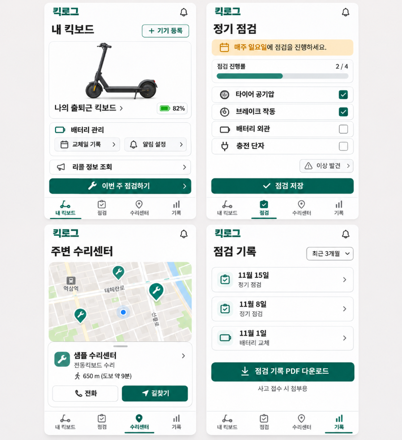
| 출처 | 확인 내용 | 앱 반영 |
|---|---|---|
| 2쪽 · 운행·충전 전 점검표 | 배터리·본체 / 충전기·단자 / 지정 충전기 호환성 / 충격·침수 이력. | 배터리·본체와 충전기·단자 상세 기준, 별도 충격·침수 필수 문항으로 반영. |
| 2쪽 · 충전 수칙 | 충전 전·중·후 상태 관리와 이상 시 행동 안내. | 정기점검 보조 카드에 원문 내용을 요약. 제품별 설명서 확인 문구 표시. |
| 2쪽 · 사고 후 기록 | 시각·장소·상태·증빙과 수리 이력 확보 아이디어. | 점검·교체 이력의 입력시각과 결과를 PDF로 제공. 별도 사고 접수 기능은 후속 범위. |
| 3쪽 · 다른 기종 비교 | 전동휠체어·전기차 적용 가능성 비교. | 전동킥보드만 구현. 다른 기종의 점검 기준을 섞지 않음. |
| 4쪽 · 아이디어 1~4 | 주기적 점검, 등록 후 배터리·리콜 관리, 주변 센터, 기록 다운로드. | 5개 핵심 기능과 연결. 대시보드는 사용자가 추가 요청한 화면. |
| 4쪽 · 내 킥보드 | 기기 카드, 배터리 관리, 리콜, 점검 시작. | 내 킥보드 상세로 보존하고 전체 요약은 대시보드로 분리. |
| 4쪽 · 정기점검 | 타이어·브레이크·배터리 외관·충전 단자와 진행률. | 4개 시각 그룹 유지. 충전기 호환성은 충전기·단자 그룹 안에 명시. 단순 체크 대신 결과 3종 선택. |
| 4쪽 · 지도 / 기록 | 지도와 센터 카드 / 기간 필터와 PDF 다운로드. | ERICA 1개 카드와 Kakao 지도. 기록 유형·기기 필터 추가. |
| 이번 추가 설계 | 등록 폼, 다기기 선택, 오류·빈 상태, 데이터 모델, 일정 규칙. | 활동지 원문 요구사항과 구분되는 구현 기준안. |
활동지 2쪽 점검 정책 원본 보기
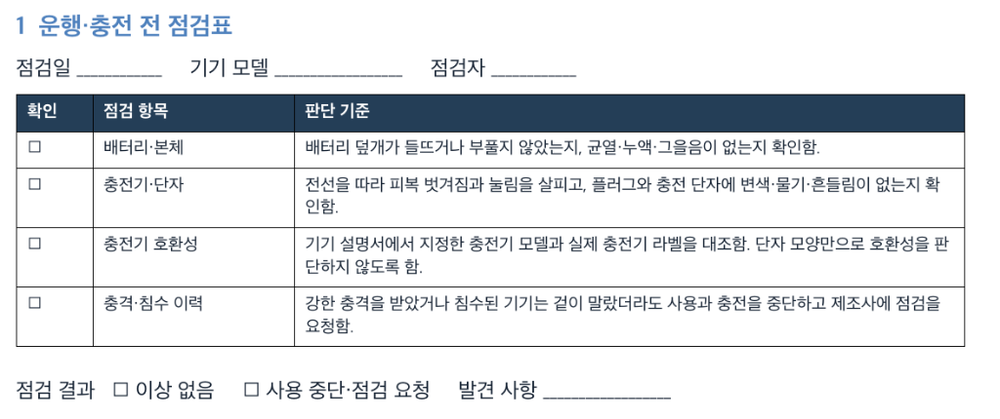
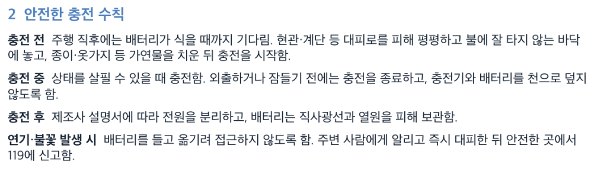
디자인 방향과 공통 규칙
원본의 차분한 녹색, 흰 카드, 간단한 관리 흐름을 이어간다. 데스크톱에서는 왼쪽 메뉴와 두 열 콘텐츠를, 모바일에서는 한 열 카드와 하단 메뉴를 사용한다. 장식보다 점검 상태·다음 행동이 먼저 읽히도록 한다.
#006C5B
#143C35
#E9F5EF
#F4F6F3
#FFF3D9
#FFEDE8
| 요소 | 디자인 및 구현 규칙 |
|---|---|
| 글꼴 | 로컬 시스템 한글 산세리프: Apple SD Gothic Neo, Noto Sans KR, sans-serif. 외부 폰트 다운로드 없이 읽을 수 있어야 함. |
| 타이포그래피 | 페이지 제목 30px/모바일 26px, 카드 제목 18px, 본문 15px, 설명 13~14px. 숫자·날짜와 상태는 굵기로 구분. |
| 공간 | 8px 기준 간격. 카드 사이 20px, 카드 안쪽 23px/모바일 19px. 카드 모서리 14px, 버튼 8px. 본문 최대 1250px. |
| 버튼 | 주요 작업은 녹색 채움. 보조 작업은 흰 바탕 테두리. 위험·이상 상태는 적색 텍스트와 명확한 행동 문구. 저장 중 중복 클릭 차단. |
| 상태 | 정상=녹색과 “이상 없음”, 미확인·예정=호박색과 텍스트, 이상=적색과 텍스트. 색상만으로 구분하지 않음. |
| 이미지·아이콘 | 시안의 킥보드는 직접 그린 SVG 도식. 최종 개발에서는 동일 SVG 또는 라이선스 확인된 아이콘 사용. 도식은 실물 모델 사진이 아님. |
| 접근성 | 폼에 label, 오류에 필드 연결, 키보드 포커스, 상태 메시지 aria-live, 버튼 터치 영역 44px 이상. 최종 구현에서 명도 대비 AA 검증. |
| 날짜 | 저장은 UTC timestamp, 표시와 일정 계산은 Asia/Seoul. 날짜만 있는 구매·교체·권장일은 ISO date로 저장. 시안 기준일은 2026.11.25로 고정. |
메뉴 구조와 사용자 흐름
이상 발견 시 정기점검 또는 기록 상세에서 수리센터로 이동한다. 메뉴는 대시보드 / 내 킥보드 / 정기점검 / 점검기록 / 수리센터 5개로 고정한다. 등록은 내 킥보드와 대시보드의 주요 버튼에서 진입한다.
| 공통 동작 | 정의 |
|---|---|
| 첫 실행 | 등록된 기기가 없으면 대시보드에 “첫 킥보드를 등록해보세요”와 등록 버튼. 숫자는 0, 최근 점검은 “아직 없음”. 다른 화면의 필수 기기 작업은 등록으로 안내. |
| 다기기 | 상단 기기 선택기를 공통 제공. 첫 등록 기기를 기본 선택. 선택한 기기를 화면 이동 시 유지하며 기록 필터와 점검 대상에 적용. 유효하지 않은 기기 ID는 404 또는 선택 재안내. |
| 목록과 상세 | 내 킥보드에서 기기 목록을 선택해 상세 표시. 대시보드 통계는 전체 기기 기준, 최근 상태·일정 카드는 선택 기기 기준으로 라벨 표시. |
| 등록 성공 | 상세 화면으로 이동하고 “킥보드를 등록했습니다” 표시. 새 기기를 현재 선택으로 설정. 브라우저 새로고침 후에도 DB에서 재조회. |
| 점검 저장 성공 | 해당 점검기록 상세로 이동. 대시보드 최근 기록·이번 달 기록 수·다음 일정이 반영됨. |
| 이탈 | 등록·점검 폼을 변경한 뒤 떠나는 경우 미저장 안내. 시안에서는 구현하지 않았으며 최종 개발 대상. |
| 로그인 제외 | 페이지 진입 즉시 관리 공간 표시. 계정 아이콘·로그인·로그아웃·프로필 메뉴 없음. 계정 데이터 모델도 생성하지 않음. |
대시보드 · 오늘 해야 할 일을 먼저
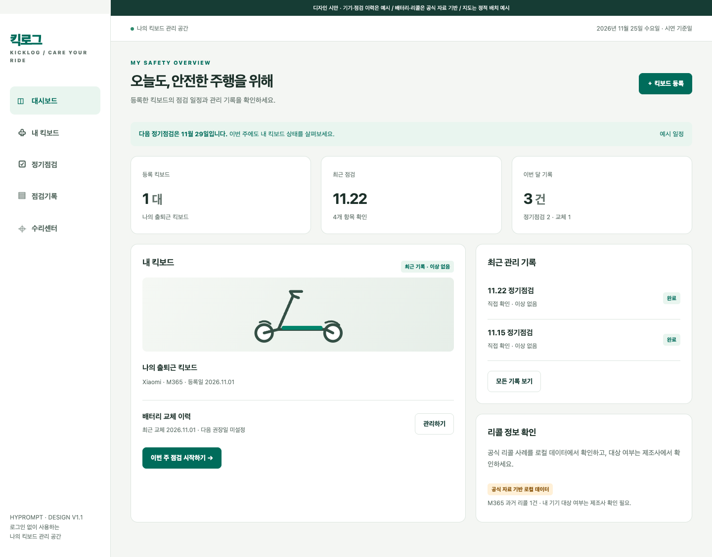
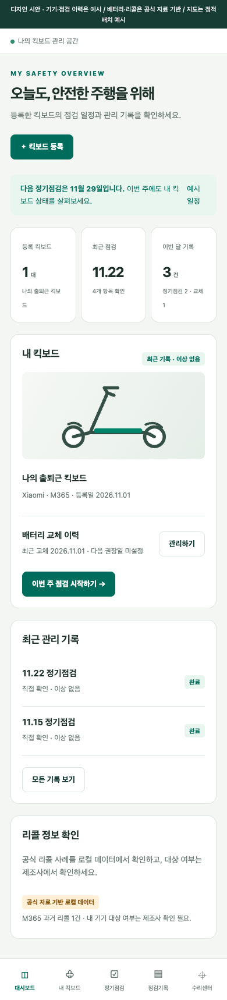
| 영역 | 내용과 동작 |
|---|---|
| 헤더 | “오늘도, 안전한 주행을 위해”와 킥보드 등록 버튼. 등록 기기 없으면 온보딩 문구로 대체. |
| 일정 띠 | 선택 기기의 가장 이른 미완료 일정 표시. 지연이면 “정기점검이 N일 지났어요”, 예정이면 날짜 표시. 버튼은 기기 ID를 유지해 점검 진입. |
| 요약 3개 | 활성 등록 기기 수 / 선택 기기 최근 점검일 / 전체 기기 이번 달 점검+배터리 교체 기록 수. 집계 범위를 카드 설명에 명시. |
| 기기 카드 | 별명·제조사·모델·등록일·최근 기록 상태. 최근 기록이 정상이어도 “현재 안전함”으로 단정하지 않고 “최근 기록 · 이상 없음”으로 표시. |
| 배터리 | 공식 사양과 사용자 교체 이력 분리. 최근 교체일, 사용자 설정 권장일. 원본의 82% 잔량은 실시간 수집 근거가 없어 표시하지 않음. |
| 최근 관리 기록 | 최근 3건. 종류와 점검일·결과 표시. 클릭 시 기록 상세. 시간순 동률은 생성 ID로 정렬. |
| 리콜 | 선택 모델의 로컬 리콜 사례 수, 원문 국가·출처·확인일. “동일 모델 공지 있음 / 개별 대상 미확인” 표시. 데이터에 없으면 “등록된 공지 없음”이며 “리콜 없음”으로 확정하지 않음. |
킥보드 등록 · 필요한 정보만 한 화면에
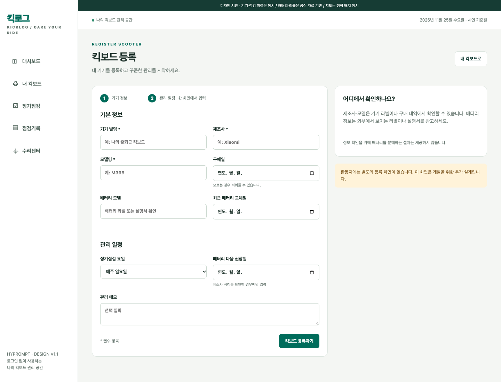
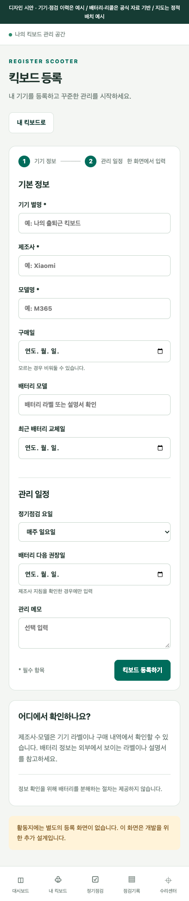
| 필드 | 필수 / 형식 | 검증과 설명 |
|---|---|---|
| 기기 별명 | 필수 / 문자열 1~40자 | 앞뒤 공백 제거. 같은 별명 허용하되 모델·등록일로 구분. |
| 제조사 / 모델명 | 각 필수 / 1~80자 | 로컬 카탈로그의 Xiaomi / M365 선택 또는 직접 입력. 정확한 catalog ID를 연결한 경우에만 해당 공식 사양 표시. 유사 이름 추측 매칭 금지. |
| 구매일 | 선택 / YYYY-MM-DD | 미래 날짜 금지. 모르면 빈 값. 과거 모델을 최근 구매한 경우도 있으므로 리콜 제조일과 혼동하지 않음. |
| 배터리 모델 | 선택 / 100자 이내 | 외부 라벨·설명서에서 확인한 정보. 알 수 없으면 빈 값. 제품 기본 사양과 교체 배터리 모델은 별도 정보. |
| 제조일 / 시리얼번호 | 선택 / 날짜 및 문자열 100자 | 리콜 확인 보조용 추가 필드. 시안에는 생략했으나 최종 상세의 추가 정보 영역에서 입력. 제조일 미상이면 구매일로 대체하지 않음. |
| 최근 배터리 교체일 | 선택 / date | 미래 날짜 금지. 입력 시 초기 교체 기록 1건을 같은 트랜잭션으로 생성. 날짜를 채우지 않으면 가짜 교체 이벤트 생성 금지. |
| 정기점검 요일 | 필수 / 월~일 | 기본 일요일. 원본 화면의 주간 점검을 제품 기본값으로 사용. 제조사 안전 기준의 주기라고 표시하지 않음. |
| 배터리 다음 권장일 | 선택 / date | 기본 비움. 사용자가 제조사 안내를 확인해 설정. 등록·변경 시 오늘 이후 날짜. 자동 6개월·12개월 교체 산정 금지. |
| 메모 | 선택 / 최대 1000자 | 일반 텍스트만 저장·이스케이프 출력. 등록 사진 업로드는 1차 범위 제외. |
내 킥보드 · 배터리와 기기 관리
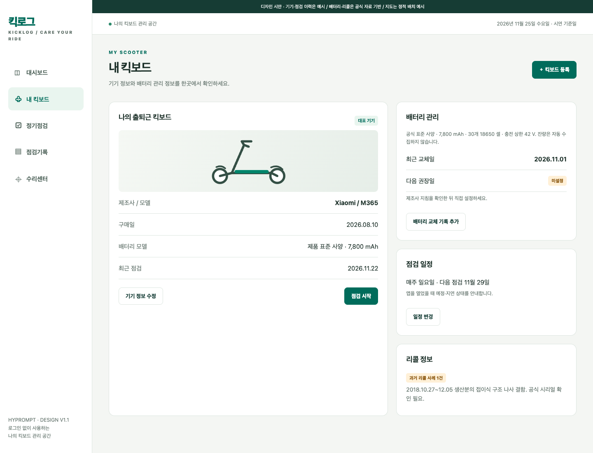
| 기능 | 상세 규칙 |
|---|---|
| 기기 목록 / 수정 | 활성 기기의 별명·모델·최근 점검일 카드. 상세에서 정보 수정. 1차 삭제는 보관 처리(archived_at)로 구현하여 과거 기록과 PDF를 유지. |
| 배터리 사양 카드 | data/battery_catalog.json에서 연결된 항목 조회. M365 표준 7,800 mAh, 18650 셀 30개, 충전 상한 42V, 약 5시간. 사양 출처와 확인일 함께 표시. 실시간 잔량·노후도 값은 없음. |
| 교체 기록 추가 | 교체일 필수, 배터리 모델·센터명·메모 선택. 저장 후 최근 교체일 갱신. 미래 교체일 금지. 교체 이력은 사용자가 입력한 사실이며 공식 사양 확인과 별도. |
| 초기 입력 수정 | 등록 당시 교체일 수정은 연결된 초기 교체 이벤트를 수정하는 동일 서비스로 처리. 이후 교체는 추가 기록으로만 생성. 두 저장 경로의 불일치 방지. |
| 권장일 / 일정 변경 | 요일 및 다음 권장일 편집 모달. 제조사 지침 확인 안내. 권장일은 배터리 건강도 판정으로 사용하지 않음. |
| 리콜 사례 상세 | 제목·결함 부위·생산 기간·프로그램 시작일·국가·원문 링크. M365 접이식 나사 리콜을 배터리 리콜로 표시하지 않음. 현재 접수 가능 여부와 국내 적용 여부는 미확인. |
| 알림 | 원본 벨 아이콘은 제외. 1차는 앱 내부의 일정 배너만 구현. 브라우저 알림 권한·예약 작업·푸시 서버는 만들지 않음. |
정기점검 · 완료와 이상을 함께 기록
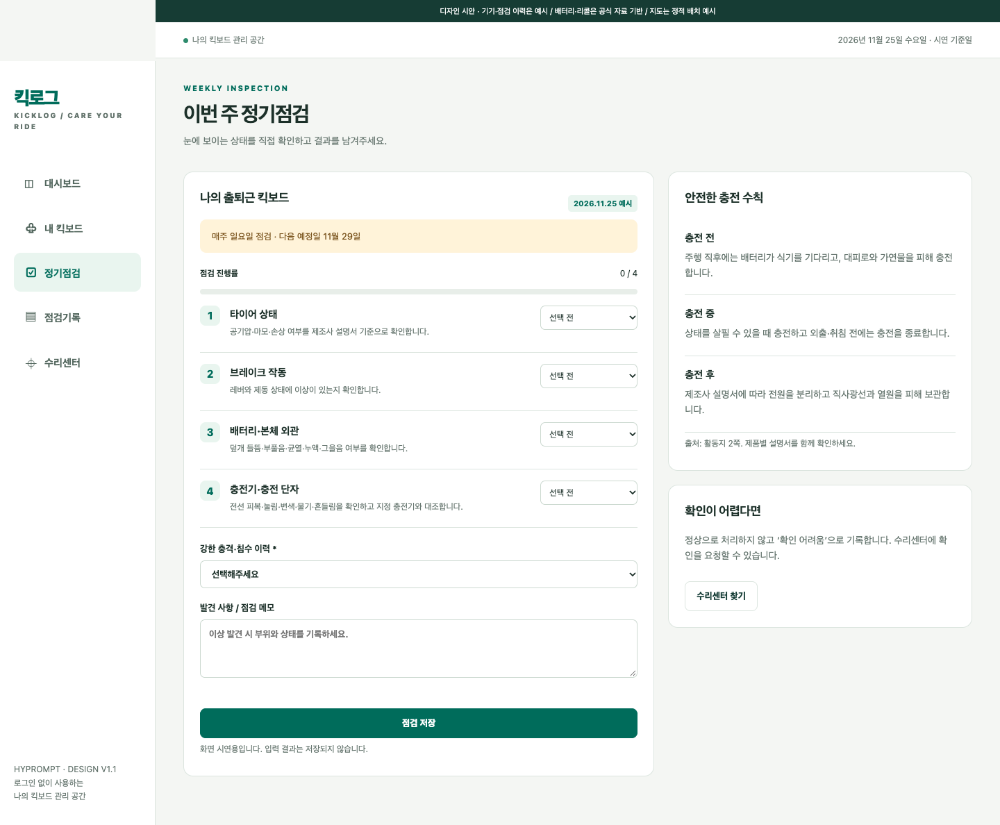
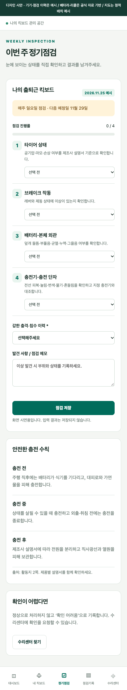
| 그룹 | 사용자 확인 항목 | 저장 값 |
|---|---|---|
| 타이어 상태 | 공기압·마모·손상. 구체적인 권장 공기압은 기종별 설명서 확인. | ok / issue / unknown 중 1개 |
| 브레이크 작동 | 레버와 제동 상태. 이상 유무를 직접 관찰. | ok / issue / unknown 중 1개 |
| 배터리·본체 외관 | 덮개 들뜸·부풀음·균열·누액·그을음. | ok / issue / unknown 중 1개 |
| 충전기·충전 단자 | 피복 벗겨짐·눌림·변색·물기·흔들림, 설명서 지정 충전기 라벨 일치. 단자 모양만으로 호환성을 판단하지 않음. | ok / issue / unknown 중 1개 |
| 충격·침수 이력 | 강한 충격 또는 침수가 있었는지 별도 필수 선택. | no / yes / unknown 중 1개 |
| 발견 사항 | 상태를 설명하는 자유 입력 메모. 이상 있음 선택 시 최소 1자 필수, 최대 2000자. | plain text / optional unless issue |
진행률과 종합 결과
진행률은 4개 그룹 중 결과가 선택된 수 / 4이다. 이상 발견과 확인 어려움도 “확인 결과 입력 완료”로 센다. 충격·침수 문항은 진행률 분모에는 넣지 않되 저장 필수다. 따라서 4/4여도 별도 문항 미선택 시 저장을 막고 안내한다.
종합 결과 우선순위: 그룹 중 issue 또는 충격·침수 yes가 하나라도 있으면 issue. issue가 없고 unknown이 있으면 unknown. 모든 그룹 ok이고 이력 no이면 ok. unknown을 정상으로 표시하지 않는다.
저장 동작
점검 기기, 실제 점검일(기본 오늘), 4개 그룹 결과, 충격·침수, 발견 사항, 정책 버전, 생성 시각을 하나의 트랜잭션으로 저장한다. 실제 점검일은 미래를 허용하지 않는다. 완료 버튼 재클릭·재전송에는 폼 토큰을 사용해 중복을 방지한다. 같은 날짜에 사용자가 명시적으로 새 점검을 시작한 경우에는 별도 기록을 허용한다.
점검 일정 계산
등록일 이후의 첫 설정 요일을 첫 예정일로 삼으며 등록 당일이 해당 요일이면 오늘이 예정일이다. 이후 7일 간격의 일정을 따른다. 예정일 당일 또는 이후 입력한 실제 점검일이 가장 오래된 미완료 일정을 충족하면, 해당 점검일보다 뒤의 첫 설정 요일로 다음 일정을 이동한다. 일찍 한 점검은 미래 일정을 완료 처리하지 않는다. 과거 기록을 늦게 입력해도 최신 완료일을 뒤로 되돌리지 않는다. 종합 결과가 issue여도 해당 점검은 수행 완료로 처리하지만 이상 상태 배너를 별도로 유지한다.
| 사례 · 서울 날짜 | 기대값 |
|---|---|
| 11.25 수요일 등록 / 매주 일요일 | 첫 예정일 11.29. 11.25 점검은 조기 기록이며 11.29는 남음. |
| 11.29 일요일 점검 저장 | 11.29 완료, 다음 예정일 12.06. |
| 11.29 미완료 / 12.02 점검 | 12.02 시점까지 지연. 저장하면 다음 예정일 12.06. |
| 12.02까지 기록이 있으나 11.22 과거 점검 추가 | 최신 완료일·다음 예정일을 과거로 되돌리지 않음. |
| 점검 요일을 변경 | 변경일 포함 다음 해당 요일부터 새 일정. 기존 완료 이력은 그대로. 변경 전 지연 일정은 일정 변경 이벤트에 남기고 새 일정으로 대체. |
점검기록 · 이력과 PDF
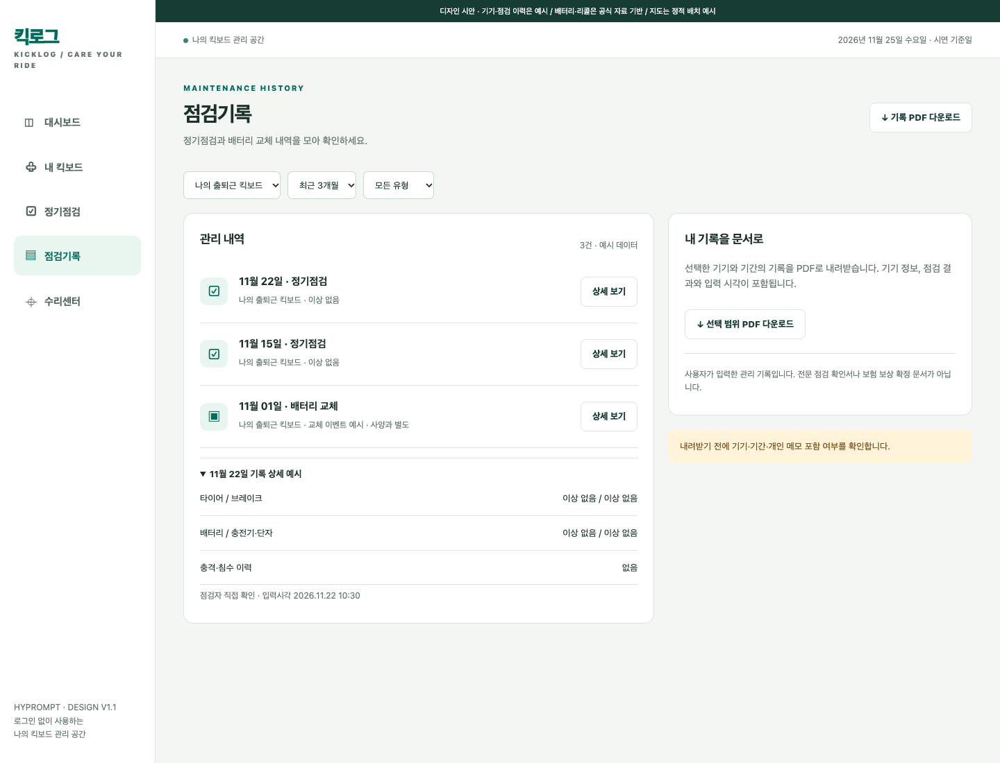
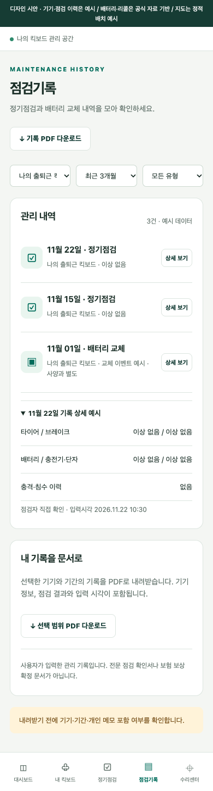
| 기능 | 개발 기준 |
|---|---|
| 목록 | 정기점검과 배터리 교체를 한 목록으로 표시. 실제 발생일 내림차순, 입력시각·ID 내림차순. 초기 20건, 이전·다음 페이지. |
| 필터 | 기기(전체 포함), 유형(전체·정기점검·배터리 교체), 기간(최근 3개월·이번 달·전체·직접 지정). 최근 3개월은 서울 기준 오늘에서 달력 3개월 전 날짜~오늘, 해당 일이 없으면 월말로 보정. 범위 양끝 포함. |
| 상세 | 기기 당시 정보 스냅샷, 실제 점검/교체일, 입력시각, 항목별 결과, 충격·침수, 메모, 정책 버전. 사용자가 기기를 수정해도 과거 기록의 모델·별명이 바뀌지 않음. |
| 편집 정책 | 1차 점검기록은 저장 후 직접 수정·삭제 UI를 제공하지 않음. 오입력은 후속 정정 메모 이벤트로 원본과 연결. 원본 자체의 무결성·증거력을 보증하는 시스템은 아님. |
| PDF 범위 | 현재 필터의 전체 검색 결과를 출력하며 현재 페이지 20건에 한정하지 않음. 다운로드 전 기기·날짜·건수·메모 포함 여부(기본 제외)를 요약하는 확인 창. |
| PDF 구성 | 킥로그 관리 기록 표지, 생성시각·검색 범위·데이터 출처, 기기 스냅샷, 각 기록과 항목 결과, 페이지 번호. 실제 점검일과 입력시각을 구분. |
| 출력 형식 | A4 세로, 한글 글꼴 포함, 긴 메모 줄바꿈, 표 헤더 반복, 레코드 단위 적절한 페이지 분리. 파일명 kicklog_records_YYYYMMDD.pdf. 렌더링 엔진은 구현 시 환경에 맞게 선택·고정. |
| 빈 결과 / 실패 | 빈 결과는 필터 초기화 버튼과 새 점검 안내. 0건이면 PDF 비활성 및 이유 표시. 생성 실패는 조회 조건 보존과 재시도 안내. |
| 문서 하단 문구 | “사용자가 입력한 관리 기록입니다. 전문 점검 확인서나 보험 보상 확정 문서가 아닙니다.” 보험 보상 가능 여부·사고 인과관계를 자동 판정하지 않음. |
수리센터 · ERICA 본관 한 곳만
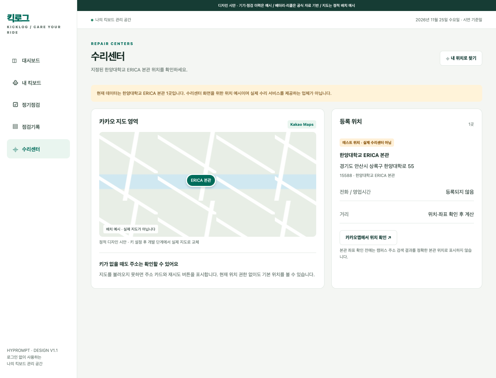
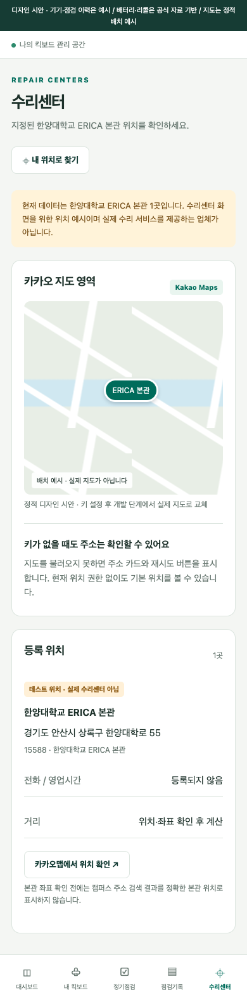
사용자 추가 지시에 따라 위치 데이터는 한양대학교 ERICA 본관 1건만 둔다. 일반 센터·제휴 센터·영업시간·센터 전화번호는 생성하지 않는다. 본관은 실제 수리업체가 아니므로 “테스트 위치 · 실제 수리센터 아님”을 카드와 지도 정보창에 표시한다.
| 요소 | 규칙 |
|---|---|
| 주소 | 경기도 안산시 상록구 한양대학로 55 / 15588 / 한양대학교 ERICA 본관. 대학 공식 입학처 찾아오시는 길에서 본관 1층 표기와 도로명 주소 확인. |
| 기본 화면 | 카카오 지도 + 위치 카드 1개. 데스크톱 2열, 모바일 지도 위·카드 아래. 업체 검색·주변 업체 자동 수집·광고 강조는 1차에서 제외. |
| 좌표 | 초기 JSON의 latitude/longitude는 null. 카카오 services 주소 변환 결과는 캠퍼스 주소 위치로 취급. 본관 정확 위치가 확인된 경우에만 건물 좌표로 저장하고 검증 상태 갱신. |
| 본관 구분 | 주소 결과만으로 정확한 본관 위치를 보장하지 않음. 필요 시 동일 위치에 대한 Kakao 장소 검색 결과에서 이름·주소를 대조하되 다른 업체를 데이터셋에 추가하지 않음. 확인 불가 시 “캠퍼스 주소 기준 위치” 표시. |
| 내 위치 | 사용자가 버튼을 눌렀을 때만 브라우저 위치 권한 요청. 거부·시간초과·지원 불가여도 ERICA 기본 위치 유지. 정확한 본관 좌표 미확인 시 거리 표시하지 않음. |
| 거리 | 사용자 위치와 확인된 목적지 좌표가 있을 때만 직선거리 계산. 실제 도보 거리·시간을 추정하지 않음. 실시간 길찾기는 Kakao Maps 외부 링크로 전달. |
| 연락처 | phone=null이므로 전화 버튼 숨김. 대학 입학처 전화번호를 수리센터 번호로 사용하지 않음. 영업중·수리 가능 모델 정보도 표시하지 않음. |
| 키 없는 화면 | 지도 대신 “카카오 지도 키를 설정하면 위치를 볼 수 있습니다”와 주소 카드. 주소 복사·카카오맵 검색 링크 유지. 가짜 지도나 마커를 실제 Kakao 지도로 표시하지 않음. |
주소 출처: 한양대학교 ERICA 입학처 · 찾아오시는 길 (2026.11.25 확인).
공식 자료 기반 로컬 데이터셋
외부 API를 호출해 배터리·리콜을 실시간 수집하지 않는다. 공식 자료에서 확인한 값을 로컬 JSON에 고정하고 앱 시작/초기화 때 읽는다. 원자료는 실제 공개 정보이고 제공 방식은 더미 API를 대신하는 로컬 fixture다. 소유 기기·교체 이벤트·점검 이력은 별도 사용자 데이터다.
| 파일 | 실제 포함 데이터 | 구분 |
|---|---|---|
| battery_catalog.json | Xiaomi M365 1건: 7,800 mAh / 18650 셀 30개 / 배터리 충전 상한 42V / 충전 약 5시간. | 제조사 스페인 공식 사양. 배터리 팩 모델과 일률적 교체주기는 확인하지 못해 null. |
| recalls.json | M365 일부 2018.10.27~12.05 생산분의 접이식 구조 나사 결함 1건. 수리 프로그램 시작 2019.07.01. | 과거 프랑스 제조사 리콜 공지. 한국 적용·현재 접수 상태·개별 시리얼 대상 미확인. 배터리 리콜 아님. |
| repair_centers.json | 한양대학교 ERICA 본관 주소 1건. phone·hours·coordinates=null, is_demo=true, is_actual_repair_center=false. | 사용자 지정 테스트 장소. 주소만 공식 자료로 검증. 정확한 건물 좌표는 미확인. |
공통 필드와 표시
schema_version=1, mode=local_fixture, checked_on=2026-11-25를 포함한다. 각 레코드는 내부 id, source_title, source_url, checked_on을 둔다. checked_on은 자료를 확인한 날이며 공지일·데이터 갱신일과 다르다. 리콜 publication_date는 확인되지 않아 null이다. 실제 공개 정보와 검증되지 않은 값을 섞어 채우지 않는다.
매칭과 결과 상태
배터리는 명시적으로 선택한 catalog ID로 연결한다. 사용자 입력 모델을 정규화해 후보를 보여줄 수 있으나 최종 선택 없이 자동 사양 적용하지 않는다. 리콜은 manufacturer/model의 정확한 일치만 후보로 보여준다. 제조일이 범위 안에 있어도 “해당 모델의 공지가 있습니다 · 개별 대상 확인 필요”로 표시한다. 생산기간 밖이거나 로컬 데이터에 없더라도 앱이 전체 공지를 포괄하지 않으므로 “안전/리콜 없음”으로 판정하지 않는다.
확인한 공식 출처
- Xiaomi España · M365 제품 사양: 카탈로그 숫자와 모델 식별 근거.
- Xiaomi France · M365 수리 리콜 공지: 생산 기간·결함·프로그램 시작일 근거. 원문은 프랑스 공식 판매처 제품이 해당하지 않는다고 명시하므로 국가·유통 경로 확인이 필요하다.
- 한양대학교 ERICA 입학처 · 찾아오시는 길: 본관 및 주소 근거.
Kakao Maps와 .env 연결 설계
카카오 지도 JavaScript SDK를 사용한다. 등록 센터 데이터는 로컬 fixture에서 가져오고, 지도 배경·주소 좌표 변환만 카카오 SDK가 처리한다. 따라서 지도는 네트워크 및 유효한 키가 필요하다. 현재 HTML 시안의 지도 영역은 배치 예시이며 실제 API 호출은 하지 않는다.
| 항목 | 설정 / 동작 |
|---|---|
| 환경 파일 | 루트 .env와 .env.example 생성 완료. KAKAO_MAP_JAVASCRIPT_KEY= 값을 입력. DATA_MODE=local_fixture, APP_TIMEZONE=Asia/Seoul. |
| 서버 로드 | 다음 세션에서 python-dotenv로 .env를 읽고 Flask config에 주입. 전체 환경변수를 브라우저에 넘기지 않고 필요한 JavaScript 키만 템플릿에 전달. |
| 키 종류 | 지도 SDK는 JavaScript 키 사용. 브라우저에서 보이는 성격의 키이므로 .env 저장만으로 비공개가 되지는 않음. REST API 키·Admin 키는 사용하지 않으며 프런트로 전달하지 않음. |
| 도메인 등록 | Kakao Developers의 해당 JavaScript 키에 SDK 도메인 등록. 예: http://localhost:5000, http://127.0.0.1:5000. 실제 접속 origin과 포트가 일치해야 함. 배포 시 배포 도메인 추가. |
| SDK | https://dapi.kakao.com/v2/maps/sdk.js?appkey=키&autoload=false&libraries=services 로드. 키는 URL 인코딩하여 안전하게 삽입. 로드 후 kakao.maps.load에서 지도 초기화. |
| 좌표 변환 | services.Geocoder.addressSearch로 도로명 주소 변환. Status.OK와 결과 배열 검사. x=경도, y=위도이므로 LatLng(y, x). 최초 성공 좌표는 검증 상태와 함께 저장 가능. |
| 건물 위치 검증 | 주소 변환 결과는 캠퍼스 위치일 수 있음. 표시 이름을 “캠퍼스 주소 기준”으로 구분하거나 본관 장소 검색 결과를 대조·확인. 미검증 좌표로 “본관 정확 위치” 표기 금지. |
| 초기화·크기 | 지도 컨테이너 높이 최소 모바일 280px/데스크톱 360px. 숨겨진 패널을 펼치거나 창 크기가 바뀌면 relayout 후 중심 재설정. 모바일 스크롤 방해를 최소화. |
| 실패 복구 | 키 없음 / SDK 로드 실패 / 도메인 인증 오류 / 주소 검색 0건 / 시간초과 구분. 주소 카드는 항상 유지. 지도 오류 문구와 다시 시도 버튼. 브라우저 콘솔에 키·환경 전체 출력 금지. |
| 링크 | 검증 좌표가 있으면 Kakao 공식 /link/map 및 /link/to 패턴 사용. 좌표 미확정이면 URL 인코딩한 장소명·주소로 Kakao 지도 검색 링크. 외부 링크는 새 탭과 noopener. |
| 권한 | 위치 권한은 내 위치 버튼 시점에만 요청. HTTPS 또는 로컬 개발 환경에서 테스트. 권한 미허용을 서비스 이용 차단 사유로 삼지 않음. |
# 준비된 환경 파일의 내용 (실제 키는 사용자가 입력)
KAKAO_MAP_JAVASCRIPT_KEY=
DATA_MODE=local_fixture
APP_TIMEZONE=Asia/Seoul
# 다음 세션 서버 설정 예시
from dotenv import load_dotenv
import os
load_dotenv()
app.config["KAKAO_MAP_JAVASCRIPT_KEY"] = os.getenv(
"KAKAO_MAP_JAVASCRIPT_KEY", ""
)공식 구현 근거: Kakao 지도 Web API 가이드 · 주소로 장소 표시하기 (2026.11.25 확인).
빈 상태·오류·반응형 동작
| 상황 | 보여줄 화면 | 복구 동작 |
|---|---|---|
| 기기 0대 | 온보딩 카드 + 등록 버튼. 통계는 0/아직 없음. | 등록으로 이동. 수리센터는 기기 없이 이용 가능. |
| 점검 0건 | 아직 점검기록이 없습니다. 첫 점검을 시작해보세요. | 점검 시작. 기기 미등록이면 등록 안내. |
| 필터 결과 0건 | 선택한 조건의 기록이 없습니다. | 필터 초기화. PDF 버튼 비활성. |
| 폼 오류 | 필드 아래 설명. 상단 오류 요약으로 포커스 이동. | 입력값 유지. 문제 필드만 수정. |
| 저장 중 / DB 실패 | 저장 중 버튼·중복 전송 방지. 실패 시 실패 메시지. | 입력 유지, 재시도. 실패를 성공 토스트로 표시하지 않음. |
| 불완전한 fixture | 자료를 불러오지 못했습니다. 출처 또는 관리 메모 확인. | 다른 핵심 화면 이용 유지. 관리 로그에는 파일과 검증 오류만 기록. |
| 리콜 매칭 없음 | 이 로컬 데이터셋에 등록된 공지가 없습니다. | 제조사 공식 확인 링크. “리콜 없음” 녹색 배지 금지. |
| 지도 키 없음 / 로드 실패 | 주소 카드 + 지도 설정/로드 안내. | 주소 복사와 외부 지도 검색. 다시 시도. |
| 현재 위치 거부 | 현재 위치 없이 기본 장소를 표시합니다. | ERICA 주소 기준 유지. 거리 대신 “위치 확인 전”. |
| 보관 기기 | 현재 기기 선택에서 제외. 기록 검색에는 보관 기기 포함 옵션. | 과거 기록 및 PDF 보존. |
| 폭 | 레이아웃 |
|---|---|
| 1100px 이상 | 224px 고정 사이드 메뉴, 본문 최대 1250px, 카드 2열. 페이지 제목 옆 주요 버튼. |
| 641~1099px | 185px 사이드 메뉴, 주요 콘텐츠 1열. 표·긴 문자열 줄바꿈 또는 표 내부 스크롤. |
| 640px 이하 | 사이드 메뉴 숨김, 5개 하단 탭, 한 열 폼, 지도 후 위치 카드. 콘텐츠 하단 여백 105px 이상으로 탭에 가림 방지. |
| 390px 검수 기준 | 화면 전체 가로 스크롤 없음. 버튼·라벨 겹침 없음. 시안에서는 숫자 3카드를 한 줄로 유지하되 보조문구 크기 조정. |
Python 구현 구조와 데이터 모델
제안 기술: Flask + Jinja2 서버 렌더링, SQLite, SQLAlchemy, python-dotenv, 순수 HTML/CSS/JavaScript. 작은 관리 앱에 맞춰 별도 React 빌드 없이 Python 중심으로 구현한다. PDF는 한글이 포함된 HTML 인쇄 또는 서버 렌더러 중 개발 환경에서 재현 가능한 방식을 선택한다. 이 항목들은 제안이며 활동지에 특정 프레임워크 요구는 없다.
aixweb/
├── .venv/ # 생성 완료 / 버전관리 제외
├── .env # 빈 키 설정 파일 / 버전관리 제외
├── .env.example # 공유 가능한 설정 예시
├── data/ # 생성 완료 / 읽기 전용 외부 자료 fixture
│ ├── battery_catalog.json
│ ├── recalls.json
│ └── repair_centers.json
├── docs/
│ ├── kicklog-design.html # 이 설계서
│ ├── kicklog-prototype.html
│ └── design-assets/
├── app/ # 이하 다음 개발 세션에서 생성
│ ├── __init__.py # create_app, config, DB
│ ├── models.py
│ ├── routes/
│ ├── services/ # 일정, fixture 조회, 점검, PDF
│ ├── templates/
│ └── static/
├── instance/kicklog.db
├── requirements.txt
└── tests/| 엔티티 | 주요 필드 | 관계 / 정책 |
|---|---|---|
| Scooter | id, nickname, manufacturer, model, battery_catalog_id?, battery_model?, serial_number?, manufactured_on?, purchased_on?, registered_at, archived_at? | 하나의 기기에 점검·교체 이력 다수. owner/user 필드 없음. 문자열 길이와 날짜 서버 검증. |
| MaintenanceSchedule | scooter_id(unique), weekday, effective_from, battery_next_due_on?, updated_at | 다음 예정일은 동일 일정 서비스로 계산. DB와 화면에서 별도 계산하지 않음. 일정 변경 시 이벤트 저장. |
| Inspection | id, scooter_id, inspected_on, overall_result, impact_water_result, notes, policy_version, scooter_snapshot_json, created_at, submission_token(unique) | 원본 보존. 날짜는 실제 점검일, created_at은 입력시각. 항목 저장과 같은 트랜잭션. |
| InspectionItem | inspection_id, item_key, result, criteria_snapshot | 4개 key=tire/brake/battery_body/charger_port. 각 점검에 키 중복 금지, 결과 enum 검증. |
| BatteryReplacement | id, scooter_id, replaced_on, battery_model?, center_name?, notes?, scooter_snapshot_json, created_at, origin | 등록 시 초기 교체일 또는 이후 추가 이벤트. 최근 교체일은 이벤트의 MAX(replaced_on)로 조회하여 이중 원장 방지. |
| HistoryAnnotation | id, target_type, target_id, text, created_at | 오입력 정정 메모. 원본 수정 대신 연결된 정정 사실을 상세·PDF에 함께 출력. |
| ScheduleChange | id, scooter_id, old_weekday, new_weekday, changed_on, previous_due_on | 일정 변경 사유와 이전 지연 일정 추적. 점검 완료 사실과 별개. |
| Fixture 3종 | data/의 versioned JSON | 읽기 전용. 앱 내 CRUD 제외. seed 시 ID로 upsert해 중복 방지. 사용자 기록과 fixture를 섞어 초기화하지 않음. |
라우트와 처리 계약
| 메서드 / URL | 역할 | 핵심 계약 |
|---|---|---|
| GET / | 대시보드 | 기기 선택값 검증, 통계·일정·최근 기록 조회. |
| GET /scooters | 내 킥보드 목록 | 보관 제외 기본. 기기 0대 안내. |
| GET /scooters/new · POST /scooters | 등록 | 검증 후 기기·일정·선택적 초기 교체 이벤트 원자적 저장. 성공 303 redirect. |
| GET /scooters/<id> | 기기 상세 | 공식 사양·리콜 후보·교체 이력·일정. |
| GET/POST /scooters/<id>/edit | 수정 | 유효한 필드만 갱신. 과거 스냅샷 보존. 초기 교체정보는 전용 이벤트 서비스 사용. |
| POST /scooters/<id>/archive | 보관 | 확인 UI 후 처리. 과거 기록 보존. |
| POST /scooters/<id>/schedule | 일정 수정 | 요일·권장일 검증 및 변경 이벤트 저장. |
| POST /scooters/<id>/battery-replacements | 교체 이벤트 추가 | 미래 날짜 금지. 이후 상세로 이동. |
| GET /inspections/new?scooter_id= · POST /inspections | 점검 작성·저장 | 4개 항목과 이력 문항 필수, 서버 결과 집계. form token 중복 방지. |
| GET /records · GET /records/<type>/<id> | 기록 목록·상세 | 기기·기간·유형 필터 공통 파서. 잘못된 범위는 400 안내. |
| POST /records/<type>/<id>/annotations | 정정 메모 추가 | 허용 type enum, 존재하는 ID, 본문 길이 검증. |
| GET /records/export.pdf | 목록과 동일한 필터 계약. 0건은 안내 화면. Content-Disposition attachment. | |
| GET /repair-centers | 수리센터 | 로컬 1건 + 지도 설정 여부. SDK가 좌표 변환. 실제 주변 업체 API 없음. |
| GET /catalog/batteries · GET /catalog/recalls | 선택적 내부 JSON 조회 | 로컬 fixture 반환용. mode와 checked_on 포함. 비밀키·전체 .env 반환 금지. |
데이터를 변경하는 요청은 POST와 CSRF 토큰을 사용한다. 성공은 POST/Redirect/GET, 검증 오류는 422와 입력 보존, 없는 리소스는 404, 예상치 못한 서버 오류는 일반 안내와 내부 로그로 구분한다. 인증 기능과 별개로 폼 입력 보호와 HTML 이스케이프는 적용한다.
구현 완료 기준
| ID | 확인 시나리오 | 통과 기준 |
|---|---|---|
| A01 | 깨끗한 DB로 첫 접속 | 로그인 없이 5개 메뉴 확인. 대시보드 0대·아직 없음. 등록 CTA 작동. |
| A02 | Xiaomi/M365 등록 후 새로고침·서버 재시작 | 기기 정보가 SQLite에서 유지. 공식 카탈로그 연결. 필수값 누락·미래 구매일 저장 차단. |
| A03 | 기기 2대 등록 및 선택 전환 | 대상 기기가 점검·일정·상세·기록 필터에 정확히 적용. 전체 통계와 선택 기기 정보 구분. |
| A04 | 배터리 교체 기록 추가 | 이력 목록에 추가되고 최근 교체일 일치. 권장일 자동 생성 없음. 잔량·노후도 수치 임의 표시 없음. |
| A05 | 점검 일부 선택 / 전체 선택 | 진행률 0~4, 누락 저장 차단. unknown과 issue 결과가 보존. issue 메모 필수. |
| A06 | 점검 정상·이상·미확인 각각 저장 | 종합 결과 우선순위 일치. 이상 기록도 저장되고 경고·센터 링크 표시. 중복 전송 1건. |
| A07 | 11.25/11.29/12.02 일정 사례 | 08절의 초기·정상·지연·과거 입력 예시 모두 일치. 서울 자정 경계 테스트. |
| A08 | 필터·상세·보관 기기 | 날짜 경계 포함, 두 기록 유형 조회. 보관 후에도 과거 기록 접근·PDF 가능. |
| A09 | PDF 다운로드 및 한글 렌더링 | 필터 전체 건수 포함. 한글 글리프·긴 메모·페이지 분리 정상. 실제 점검일과 입력시각, 사용자 기록 문구 포함. |
| A10 | fixture 로드 | 배터리 1건·리콜 1건·센터 1건. 공식 source_url와 checked_on 존재. 미확인 값 null. 초기화 재실행 시 사용자 기록 보존. |
| A11 | M365 리콜 후보 확인 | 접이식 나사 결함·생산 기간·국가 표시. 배터리 리콜로 혼동하지 않고 대상 미확인 표시. 미매칭 모델에 “리콜 없음” 판정 금지. |
| A12 | 카카오 키 없음 / 유효키 / 도메인 오류 | 키 없음에도 주소 카드 이용 가능. 유효키·등록 도메인에서 실제 Kakao 지도. 실패 안내·재시도. ERICA 외 마커 없음. |
| A13 | 현재 위치 거부 및 주소 변환만 성공 | 권한 거부로 화면 중단 없음. 본관 미검증 좌표는 캠퍼스 주소 기준 표기. 허위 거리·영업정보·전화 없음. |
| A14 | 1440px·768px·390px 및 키보드 | 가로 넘침·탭 가림·폼 겹침 없음. 주요 동작 키보드 사용, 라벨·포커스·상태 읽기 가능. |
| A15 | .env와 코드 확인 | 실제 키는 .env에만 작성, .gitignore 적용. JavaScript 키만 페이지 전달. .env.example은 빈 값. 로그인 구현 없음. |
다음 개발 세션에 전달할 내용
아래 요청을 그대로 전달하면 이 문서와 자료를 기준으로 기능 개발을 시작할 수 있다.
docs/kicklog-design.html을 개발 기준으로 킥로그 웹앱을 구현해줘.
docs/kicklog-prototype.html 및 docs/design-assets/ 스크린샷의 디자인을 참고해줘.
Python + 기존 .venv를 사용하고, 제안 스택 Flask/Jinja2/SQLite를 기본으로 해줘.
로그인 없이 킥보드 등록·대시보드·내 킥보드·정기점검·점검기록/PDF·수리센터를 구현해줘.
배터리·리콜은 data/의 공식 출처가 있는 로컬 fixture를 사용하고 실시간 API는 붙이지 마.
수리센터 데이터는 한양대학교 ERICA 본관 1건만 유지해줘.
지도는 Kakao Maps JavaScript SDK와 .env의 KAKAO_MAP_JAVASCRIPT_KEY를 사용해줘.
키가 없거나 지도 호출이 실패해도 주소 카드를 볼 수 있게 해줘.
설계서의 일정 계산·상태 집계·검증·과거 기록 보존 규칙을 지키고
16절 A01~A15를 검증한 뒤 실행 방법을 알려줘.권장 개발 순서
- venv 활성화, 의존성 고정, 앱 팩토리·DB·fixture 검증, 공통 레이아웃 구현.
- 기기 등록·수정·선택·보관, 배터리 카탈로그와 교체 이력 구현.
- 일정 서비스, 정기점검 저장과 종합 결과, 대시보드 집계 구현.
- 기록 필터·상세·정정 메모·PDF 및 한글 출력 확인.
- ERICA 위치 카드, Kakao SDK·좌표 검증·권한/오류 처리 구현.
- 완료 기준 검증, 모바일 시각 검수, 실행 README 작성.
현재 준비 상태
.venv 생성 완료. .env와 .env.example에 빈 JavaScript 키 항목 준비. JSON 3종 작성 완료. Flask·DB·실제 지도·PDF 생성 기능은 미구현이다. 카카오 JavaScript 키 입력과 도메인 등록은 실제 지도 확인 전에 필요하다.
# 다음 개발 세션 시작 시
source .venv/bin/activate
# .env의 KAKAO_MAP_JAVASCRIPT_KEY 값을 입력
# 앱 구현·의존성 설치 후 예시 실행 명령:
# flask --app app run --host 127.0.0.1 --port 5000